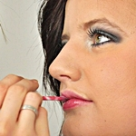
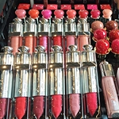
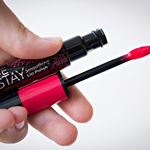
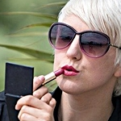
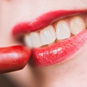
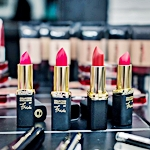
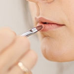
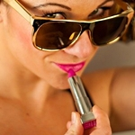

메이크업 TIP
Hot and Trendy
수정하기
저녁에도 방금 한 듯, 간단한 수정 메이크업 팁!
무너진 메이크업 수정하기
Retouch
저녁에 모임이 있거나 특별한 데이트가 있는 날! 다른 때 보다 예뻐보이기 위해 아침에 공들여 곱게 메이크업을 하고 나가도, 시간이 지날수록 얼굴은 칙칙해지고 번들거리고, 마스카라는 번져 눈밑은 까맣고, 립스틱은 입술주름 사이에 끼어 더 나이들어 보이기까지!
이럴 때 유용한 수정 메이크업 팁!
극복하기
입술 고민별 립스틱 바르는 방법!
입술 컴플렉스 극복하기
Complex
입술이 너무 두꺼워서, 립스틱을 바르면 입술만 부각되는것 같아, 립스틱 바르기를 꺼려한다거나, 반대로 입술이 너무 얇고 볼륨감이 없어서, 이렇게 저렇게 발라도 예뻐보이지 않아 고민이었다면, 지금 주목!
립메이크업 고민을 타파해보자!
얇고 볼륨감 없는 입술
글로시한 투톤으로!얇고 평평한 볼륨감없는 입술에는 매트한 립스틱보다 촉촉하고 부드러운 텍스처의 립스틱을 발라 글로시한 윤광으로 팽창되어 보이는 효과를 주는 것이 좋습니다.
또한 요즘 대세인 투톤 립 메이크업을 팽창컬러인 핑크를 활용해 연출해주면 볼륨감이 더욱 업됩니다.
-

우선 바깥쪽에 핑크립스틱을 살살 발라준 뒤, 전체적으로 립스틱이 자연스럽게 펴지도록 합니다.
-

다시 한번 더 바깥쪽에 핑크립스틱을 덧발라 입술 바깥쪽에 핑크 컬러가 잘보일 수 있도록 합니다.
-

이제 입술 안쪽에 글로시한 레드 컬러 립스틱을 톡톡 두드리듯 바르면서 바깥쪽으로 퍼져나오게 바릅니다.
-

자연스런 투톤 립 연출을 위해 아무것도 묻어 있지 않은 립 브러쉬로 두 컬러의 경계를 풀어주도록 합니다.
두툼하고 큰 입술
매트한 비비드톤으로!두꺼운 입술에 진한 컬러 립스틱을 바르면 입술에만 시선이 주목될 것 같아 파스텔톤 혹은 연한 컬러의 립스틱을 선택했다면? NG!
오히려 파스텔톤 혹은 연한 핑크톤, 오렌지톤은 팽창컬러로 입술을 더 커보이게 한다는 것!
따라서 매트한 제형의 비비드톤을 선택해, 자신의 본래 입술라인보다 조금 작게 그려주는 것이 수축효과를 극대화할 수 있습니다.
-

우선 파운데이션이나 컨실러를 이용해 립라인을 흐릿하게 정돈해 줍니다.
-

비비드 레드 혹은 오렌지 컬러를 이용해 립 안쪽부터 부드럽게 발라 본래 립라인보다 1mm정도 안쪽까지 채우도록 합니다.
-

여기서 포인트는 절대 립브러쉬로 인위적으로 립라인을 줄여 그려선 안된다는 점! 자연스럽게 마무리 할 것!
-

만약 비비드 풀립 연출이 어색하다면 립스틱을 입술 안쪽에 톡톡 찍어주고 경계를 펴주듯 그라데이션 해주는 방법도 좋습니다.